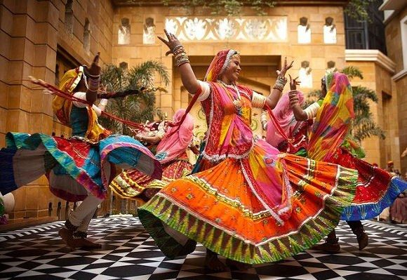

Art and Culture

- Kathak
- Ghoomar
- Tamasha
Traditional Dance
The Jaipur Gharana for Kathak is one of the three gharanas of the major north Indian classical dance form of Kathak.
The Ghoomar is a popular folk dance style.
Tamasha is an art form where Kathputli puppet dance is shown in play form. [1]
Art
You might have heard a lot about Puppet Shows of Rajasthan. These are the most inexpensive souvenirs to carry. This home decor item reminds you of courageous kings and the beautiful queens of the city. These are a hallmark of Rajasthani Culture and heritage.[2]
Folk Jewelery
The royals as well as the villagers of Jaipur have men and women adorned with beautiful traditional jewelry. The people got influenced by the bygone eras and helped craft of jewelry making and Meenakari to groom and flourish. Meenakari art jewelry with enamel work is another popular handicrafts of Jaipur. Silver, gold and the colors including blue, green and yellow are the base of the Meenakari art. The silver and Meenakari jewelry are found here in bracelets, rings, earrings, nose rings, toe rings, ankle bracelets, and pendants.[2]
Paintings
Jaipur paintings has a unique place in the best handicrafts items of Jaipur. These paintings bring the impact of rich cultural heritage to the forefront.These traditional paintings have a distinctive style as these paintings are examples of rich craftsmanship.[2]